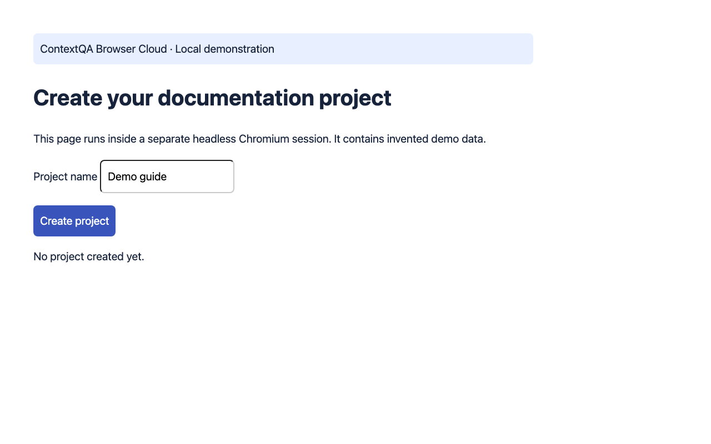
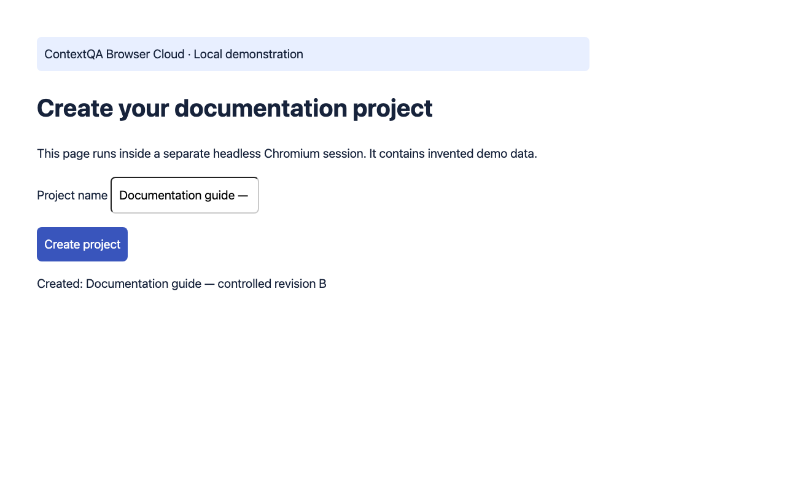

Local browser walkthrough — observed task completion
Reviewed static walkthrough. This does not control a live customer browser.
1. Start a local synthetic browser session
Purpose: create a documentation project. Preconditions: run the private Browser Cloud loopback demo; no external account, AI key or customer data. Select Start demo session. Observed baseline: No project created yet. Captured 2026-10-27; same application build throughout.

2. Create the controlled demo project
Set Text to enter to Documentation guide — controlled revision B, then select Run demo task. The service fills #name and clicks #create. Select Read page text and Save screenshot. Observed exact result: Created: Documentation guide — controlled revision B. End the session to finalize video. This is a controlled state change in one synthetic app build, not a product release or Layerpath/EkLine integration.
